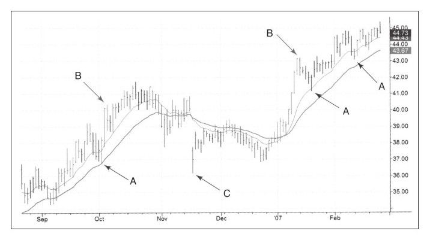

几乎每个走势图都由价格的趋势性运动和横盘整理构成。强趋势吸引初学者，因为从上涨走势图上可以清晰地看到，如果在底部买入，并且持有到现在，就会赚一大笔钱。不过有经验的交易者知道，大的趋势在图中并不是清晰可见的，在中间似乎很清晰的趋势发展到边缘时，反而显得模糊了。追踪趋势就像骑着一匹总想将你摔下的野马，趋势交易也比它看起来要困难得多。
市场时常会持续地上下往复，虽然没有科学方法能说明为什么这样震荡，但反趋势交易者会利用这种震荡特性做交易。
如图1-1所示，获利了结或是做空的纠结心理摆在你面前。从图中很容易辨识出从左侧底部向右的上升趋势，它似乎在叫人买入并持有。但要知道，这是历史走势，如果你此刻有一张多单，你一定会想这个上升趋势会不会在今天或者就在这一小时结束，耐心等待需要强大的心智。
反趋势交易有其自身的利弊。反趋势交易持续时间较短，也不需要太多耐心，这就决定了反趋势交易者只能获得较少的回报。不过对于反趋势交易者来说，有一点非常重要，那就是要“管住自己的手”，等待适当的时机出击。
在《机械交易系统》一书中，理查德·威斯曼清晰地描述了三种类型的交易者——趋势跟踪型、平均反转（反趋势）型和日内交易者的区别。他们有不同的脾性，会把握不同的交易机会并且面对不同的挑战。尽管大多数人的交易风格属于上述三种之一，但大家在做决策时很少会意识到自己是哪类交易者。不过，一位交易者能了解自己的脾性、喜好以及交易风格，是绝对有益的。
